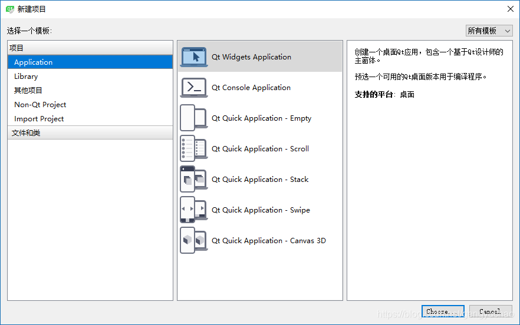
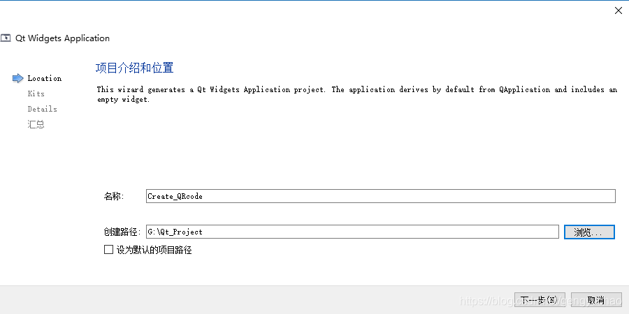
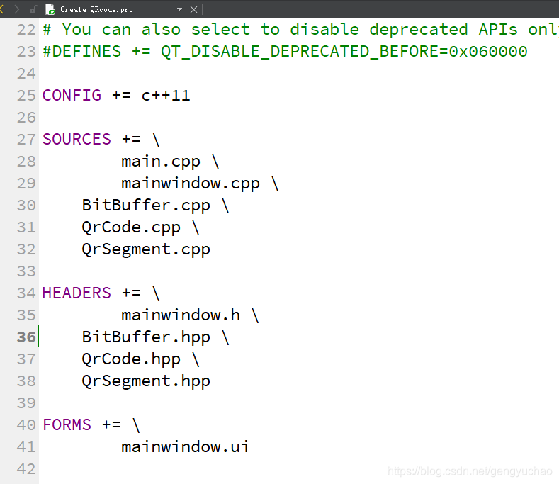
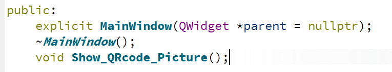
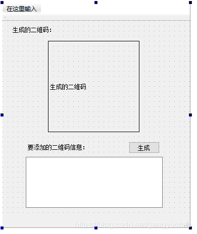

——今天的我們，是站在巨人的肩膀上前行。
二維碼自從出現以來，已經極大地改變了我們的生活方式，它能容納一些簡短的信息，卻又不那麼簡短，以至於很多場合都能使用二維碼作為信息的載體。一個月以前，有個老師跟我提過一句，如果可以在上機實驗時使用二維碼來綁定學生的信息，就可以省很多時間。於是我就萌生了使用Qt繪製二維碼的想法。
但是這一個月來我一直在研究另一個東西，直到昨天我才研究出一點進展。那個做好之後我就開始研究如何使用Qt生成二維碼，發現二維碼是有不同標準的，比如在二維碼符號表示技術研究方面已研製出多種碼製，常見的有PDF417、QR Code、Code 49、Code 16K、Code One等。常用的二維碼相關的庫也有很多zbar、zxing、libqrencode等。
這次我選用了Github上的Nayuki 大神所寫的QRcode庫c++版本，放入Qt中，實現了承載指定信息的二維碼的繪製功能。下面是一些總結。
一、QR Code碼
QR Code碼，是由Denso公司於1994年9月研製的一種矩陣二維碼符號，它具有一維條碼及其它二維條碼所具有的信息容量大、可靠性高、可表示漢字及圖像多種文字信息、保密防偽性強等優點。
二、二維碼生成庫的源碼
Github上的大佬Nayuki：https://github.com/nayuki 提供了QR Code碼相關的圖片生成庫，包含了C、C++、Java、JavaScript 、Python 、Rust等語言的各個版本，代碼簡潔清晰，質量非常高。
我也把這份代碼fork到了我的倉庫中，如果想重現我的操作也可以從我的Github主頁上獲取相關的源代碼 https://github.com/gengyuchao/QR-Code-generator
本次我使用的是c++版本的代碼文件夾名為cpp
三、創建Qt工程
1、在windows下創建Qt工程


點擊下一步直至完成
2、添加庫源文件
將下載的QR-Code-generator-master.zip 中的cpp文件夾裡的
“BitBuffer.cpp”、“BitBuffer.hpp”、
“QrCode.cpp”、“QrCode.hpp”、
“QrSegment.cpp”、“QrSegment.hpp”、
解壓到工程目錄“G:\Qt_Project\Create_QRcode”下
最一開始的工程目錄是這樣子的，然後我們在工程文件夾上右擊，選擇Add Existing Directory把剛剛解壓的庫文件添加進去
取消勾選已有的main.cpp 、mainwindows.cpp 、mainwindows.h 然後點擊OK即可
添加後的工程目錄變成了這樣
运行之后发现没有错误（如果你不小心在上一步直接点了OK、工程会报错，原因是重复添加了之前的文件 右击打开pro文件 删除重复的 main.cpp 、mainwindows.cpp 、mainwindows.h 即可）

3、编写二维码绘制函数
根据库的说明文档，我们可以知道这个库的使用方法如下：
- C++ language:
-
- #include <string>
- #include <vector>
- #include "QrCode.hpp"
- using namespace qrcodegen;
-
- // Simple operation
- QrCode qr0 = QrCode::encodeText("Hello, world!", QrCode::Ecc::MEDIUM);
- std::string svg = qr0.toSvgString(4);
-
- // Manual operation
- std::vector<QrSegment> segs =
- QrSegment::makeSegments("3141592653589793238462643383");
- QrCode qr1 = QrCode::encodeSegments(
- segs, QrCode::Ecc::HIGH, 5, 5, 2, false);
- for (int y = 0; y < qr1.getSize(); y++) {
- for (int x = 0; x < qr1.getSize(); x++) {
- (... paint qr1.getModule(x, y) ...)
- }
- }
添加头文件#include <string> #include <vector> #include "QrCode.hpp" 使用命名空间
using namespace qrcodegen;然后就可以使用下面的函数了
于是我创建了函数 void Show_QRcode_Picture() 并把它添加进 mainwindows.h头文件中

- void MainWindow::Show_QRcode_Picture()
- {
- // Manual operation
- std::vector<QrSegment> segs =
- QrSegment::makeSegments("3141592653589793238462643383");
- QrCode qr1 = QrCode::encodeSegments(
- segs, QrCode::Ecc::HIGH, 5, 5, 2, false);
- for (int y = 0; y < qr1.getSize(); y++) {
- for (int x = 0; x < qr1.getSize(); x++) {
- //(... paint qr1.getModule(x, y) ...)
- }
- }
- }
将实例代码添加进去
我的方案是
使用Qt的QImage进行图像的编辑 ->转换为QPixmap-> 在QLabel中显示
4、在mainwindows.ui中添加控件
添加QLabel、QTextEdit和一个Button按钮

5、代码实现
- //添加头文件：
- #include "QImage"
-
- //创建二维码画布
- QImage QrCode_Image=QImage(qr1.getSize(),qr1.getSize(),QImage::Format_RGB888);
- //图像大小转换为适当的大小
- QrCode_Image=QrCode_Image.scaled(ui->label->width(),ui->label->height(),
- Qt::KeepAspectRatio);
- //转换为QPixmap在Label中显示
- ui->label->setPixmap(QPixmap::fromImage(QrCode_Image));
完整代码如下：
- void MainWindow::Show_QRcode_Picture(QString message)
- {
-
- // Manual operation
- std::vector<QrSegment> segs =
- QrSegment::makeSegments(message.toLatin1());
- QrCode qr1 = QrCode::encodeSegments(
- segs, QrCode::Ecc::HIGH, 5, 5, 2, false);
- //创建二维码画布
- QImage QrCode_Image=QImage(qr1.getSize(),qr1.getSize(),QImage::Format_RGB888);
-
- for (int y = 0; y < qr1.getSize(); y++) {
- for (int x = 0; x < qr1.getSize(); x++) {
- if(qr1.getModule(x, y)==0)
- QrCode_Image.setPixel(x,y,qRgb(255,255,255));
- else
- QrCode_Image.setPixel(x,y,qRgb(0,0,0));
- }
- }
-
- //图像大小转换为适当的大小
- QrCode_Image=QrCode_Image.scaled(ui->label->width(),ui->label->height(),
- Qt::KeepAspectRatio);
- //转换为QPixmap在Label中显示
- ui->label->setPixmap(QPixmap::fromImage(QrCode_Image));
-
- }
-
- void MainWindow::on_Create_Button_clicked()
- {
- Show_QRcode_Picture(ui->textEdit->toPlainText());
- }
6、需要注意
下面内容摘自百度百科：
1、符号规格从版本1（21×21模块）到版本40（177×177 模块），每提高一个版本，每边增加4个模块。
2、数据类型与容量（参照最大规格符号版本40-L级）：
数字数据：7,089个字符
字母数据: 4,296个字符
8位字节数据: 2,953个字符
汉字数据：1,817个字符
3、数据表示方法：
深色模块表示二进制"1"，浅色模块表示二进制"0"。
4、纠错能力：
L级：约可纠错7%的数据码字
M级：约可纠错15%的数据码字
Q級：約可糾錯25%的數據碼字
H級：約可糾錯30%的數據碼字
5、結構鏈接（可選）
可用1-16個QR Code碼符號表示一組信息。每一符號表示100個字符的信息。
當前的規格為5，如果你的內容超過了最大數據量，就會造成程序崩潰。如果需要在二維碼中添加更多的信息，你可以適當地修改模塊版本，以增大數據容量。
至此，我們的二維碼生成器就做好了。歡迎大家和我一起交流討論。整個工程我已經上傳至我的Github主頁上（https://github.com/gengyuchao/Create_QRcode），歡迎訪問~


![]()


 举报
举报

 3375
3375